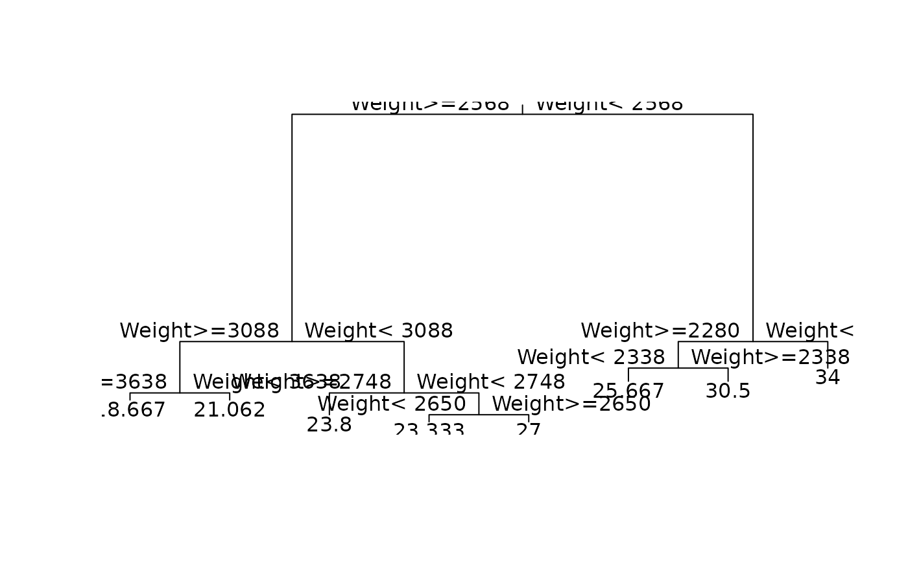
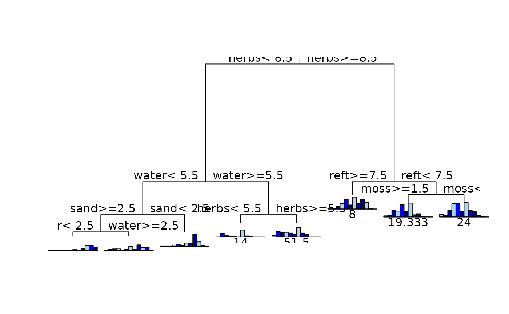
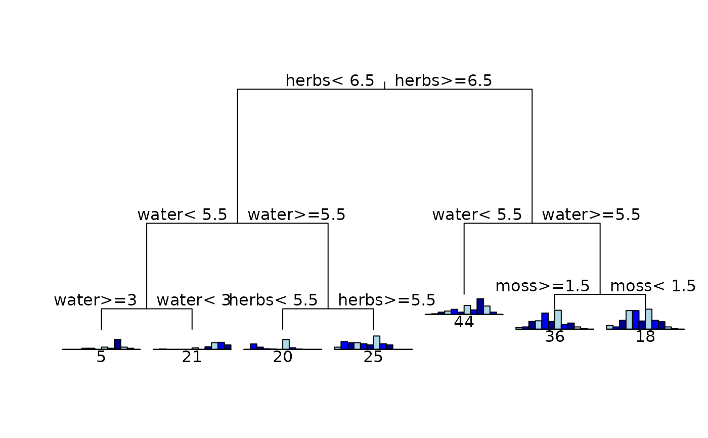
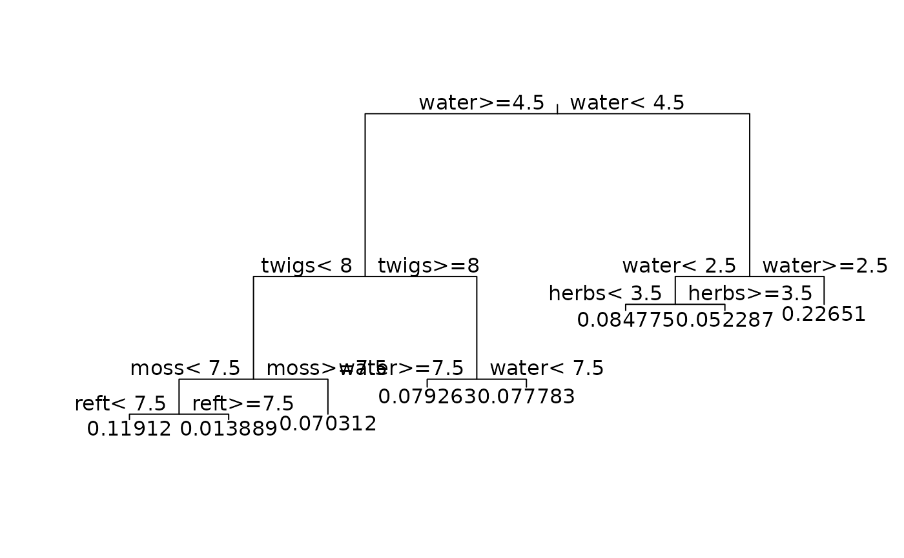

Recursive Partitioning and Regression Trees
rpart.RdFit a rpart model
Usage
rpart(formula, data=NULL, weights, subset, na.action=na.rpart, method,
dissim, model=FALSE, x=FALSE, y=TRUE, parms, control, cost, ...)Arguments
- formula
a formula, as in the
lmfunction.- data
an optional data frame in which to interpret the variables named in the formula
- weights
optional case weights.
- subset
optional expression saying that only a subset of the rows of the data should be used in the fit.
- na.action
The default action deletes all observations for which
yis missing, but keeps those in which one or more predictors are missing.- method
one of
"anova","poisson","class","mrt","dist", or"exp". Ifmethodis missing then the routine tries to make an intellegent guess. Ifyis a survival object, thenmethod="exp"is assumed, ifyis a matrix thenmethod="mrt"is assumed, ifyis a factor thenmethod="class"is assumed, otherwisemethod="anova"is assumed. It is wisest to specifiy the method directly, especially as more criteria are added to the function.For method=
"dist"the response must be a square symmetric distance matrix; e.g. returned bygdistorxdiss. Weights and cross-validation are currently not implemented for method="dist".Alternatively,
methodcan be a list of functions namedinit,splitandeval.- dissim
used when method=
"anova"or method="mrt". Dissimilarity types are either"euc"for Euclidean (sums of squares about the mean) or"man"for Manhattan (sums of absolute deviations about the mean. The latter is experimental and has proved useful for ecological data.- model
keep a copy of the model frame in the result. If the input value for
modelis a model frame (likely from an earlier call to therpartfunction), then this frame is used rather than constructing new data.- x
keep a copy of the
xmatrix in the result.- y
keep a copy of the dependent variable in the result.
- parms
optional parameters for the splitting function. Anova splitting has no parameters. Poisson splitting has a single parameter, the coefficient of variation of the prior distribution on the rates. The default value is 1. Exponential splitting has the same parameter as Poisson. For classification splitting, the list can contain any of: the vector of prior probabilities (component
prior), the loss matrix (componentloss) or the splitting index (componentsplit). The priors must be positive and sum to 1. The loss matrix must have zeros on the diagnoal and positive off-diagonal elements. The splitting index can beginiorinformation. The default priors are proportional to the data counts, the losses default to 1, and the split defaults togini.- control
options that control details of the
rpartalgorithm.- cost
a vector of non-negative costs, one for each variable in the model. Defaults to one for all variables. These are scalings to be applied when considering splits, so the improvement on splitting on a variable is divided by its cost in deciding which split to choose.
- ...
arguments to
rpart.controlmay also be specified in the call torpart. They are checked against the list of valid arguments.
Details
This differs from the tree function mainly in its handling of surrogate variables. In most details it follows Breiman et. al. quite closely.
References
Breiman, Friedman, Olshen, and Stone. (1984) Classification and Regression Trees. Wadsworth.
De'ath G. (2002) Multivariate Regression Trees : A New Technique for Constrained Classification Analysis. Ecology 83(4):1103-1117.
Examples
data(car.test.frame)
z.auto <- rpart(Mileage ~ Weight, car.test.frame)
summary(z.auto)
#> Call:
#> rpart(formula = Mileage ~ Weight, data = car.test.frame)
#> n= 60
#>
#> CP nsplit rel error xerror xstd
#> 1 0.59534912 0 1.0000000 1.0296258 0.17651975
#> 2 0.13452819 1 0.4046509 0.5877509 0.10867329
#> 3 0.06942684 2 0.2701227 0.4707942 0.08525448
#> 4 0.03449195 3 0.2006958 0.3362592 0.06371445
#> 5 0.01849081 4 0.1662039 0.3826438 0.07645957
#> 6 0.01571904 5 0.1477131 0.3503326 0.07593372
#> 7 0.01000000 7 0.1162750 0.3417547 0.08797556
#>
#> Node number 1: 60 observations, complexity param=0.5953491
#> mean=24.58333, MSE=22.57639
#> left son=2 (45 obs) right son=3 (15 obs)
#> Primary splits:
#> Weight < 2567.5 to the right, improve=0.5953491, (0 missing)
#>
#> Node number 2: 45 observations, complexity param=0.1345282
#> mean=22.46667, MSE=8.026667
#> left son=4 (22 obs) right son=5 (23 obs)
#> Primary splits:
#> Weight < 3087.5 to the right, improve=0.5045118, (0 missing)
#>
#> Node number 3: 15 observations, complexity param=0.06942684
#> mean=30.93333, MSE=12.46222
#> left son=6 (9 obs) right son=7 (6 obs)
#> Primary splits:
#> Weight < 2280 to the right, improve=0.5030908, (0 missing)
#>
#> Node number 4: 22 observations, complexity param=0.01849081
#> mean=20.40909, MSE=2.78719
#> left son=8 (6 obs) right son=9 (16 obs)
#> Primary splits:
#> Weight < 3637.5 to the right, improve=0.4084816, (0 missing)
#>
#> Node number 5: 23 observations, complexity param=0.01571904
#> mean=24.43478, MSE=5.115312
#> left son=10 (15 obs) right son=11 (8 obs)
#> Primary splits:
#> Weight < 2747.5 to the right, improve=0.1476996, (0 missing)
#>
#> Node number 6: 9 observations, complexity param=0.03449195
#> mean=28.88889, MSE=8.54321
#> left son=12 (3 obs) right son=13 (6 obs)
#> Primary splits:
#> Weight < 2337.5 to the left, improve=0.607659, (0 missing)
#>
#> Node number 7: 6 observations
#> mean=34, MSE=2.666667
#>
#> Node number 8: 6 observations
#> mean=18.66667, MSE=0.5555556
#>
#> Node number 9: 16 observations
#> mean=21.0625, MSE=2.058594
#>
#> Node number 10: 15 observations
#> mean=23.8, MSE=4.026667
#>
#> Node number 11: 8 observations, complexity param=0.01571904
#> mean=25.625, MSE=4.984375
#> left son=22 (3 obs) right son=23 (5 obs)
#> Primary splits:
#> Weight < 2650 to the left, improve=0.6321839, (0 missing)
#>
#> Node number 12: 3 observations
#> mean=25.66667, MSE=0.2222222
#>
#> Node number 13: 6 observations
#> mean=30.5, MSE=4.916667
#>
#> Node number 22: 3 observations
#> mean=23.33333, MSE=0.2222222
#>
#> Node number 23: 5 observations
#> mean=27, MSE=2.8
#>
plot(z.auto); text(z.auto)

data(spider)
fit1 <- rpart(data.matrix(spider[,1:12])~water+twigs+reft+herbs+
moss+sand,spider,method="mrt")
plot(fit1); text(fit1)

fit2 <- rpart(data.matrix(spider[,1:12])~water+twigs+reft+herbs+
moss+sand,spider,method="mrt",dissim="man")
plot(fit2); text(fit2)

fit3 <- rpart(gdist(spider[,1:12],meth="bray",full=TRUE,sq=TRUE)
~water+twigs+reft+herbs+moss+sand,spider,method="dist")
plot(fit3); text(fit3)
